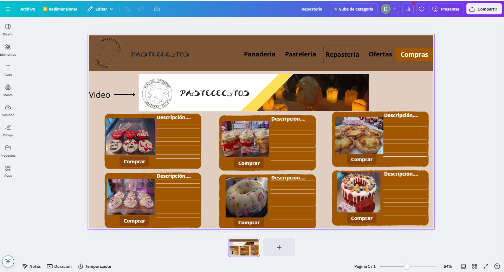
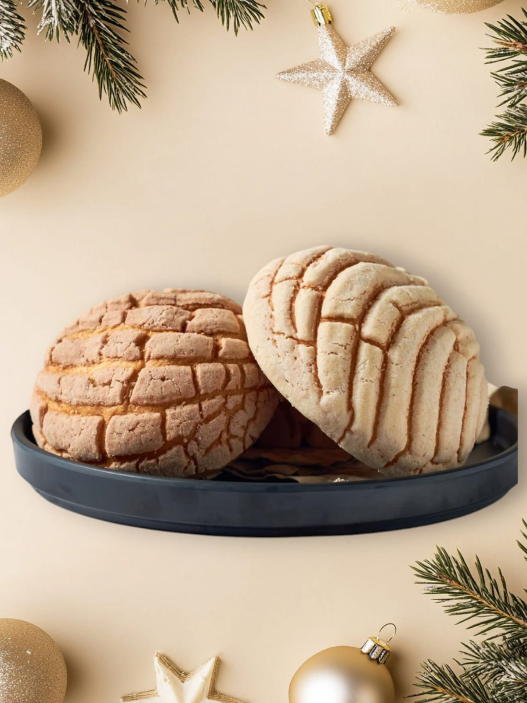
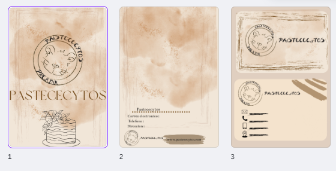

APORTACIONES DEL PROYECTO WEB

Este es un boceto que realize para paginas secundarias para los de mas productos la cual fue utilizada para la pagina principal de ventas.

Apoye con algunas imagenes a editarlas y ponerles fondo para que solo se enfoque en el producto, ademas que llame mas la atencion del cliente.

Fue una seccion de aplicaciones del manual que el profesor nos brindo para agrgarle algunas cosas como las "APLICACIONES" las cuales estas fueron una seccion del manual.